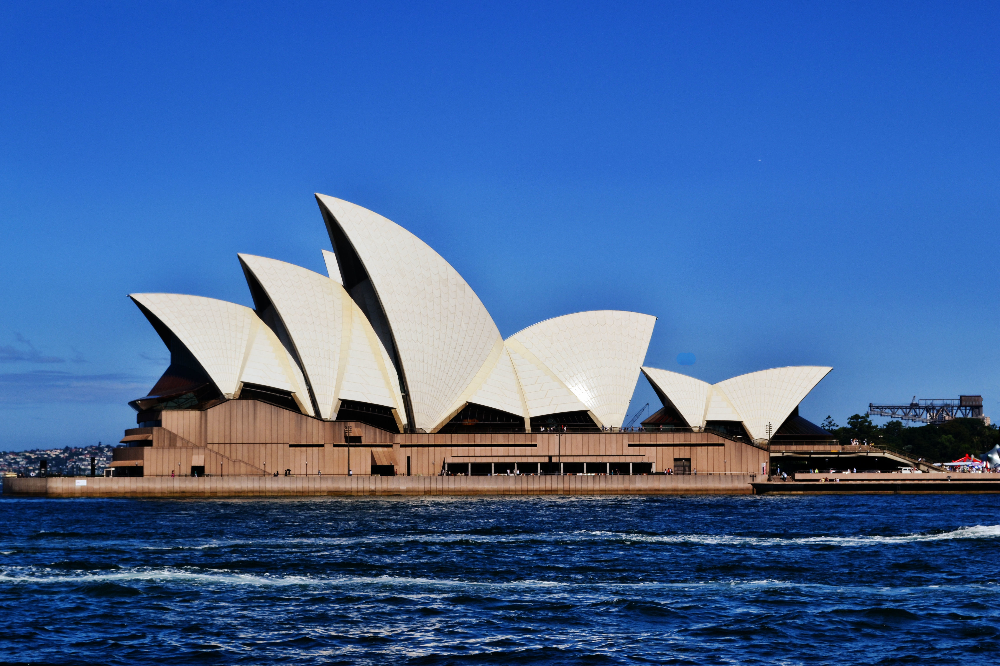
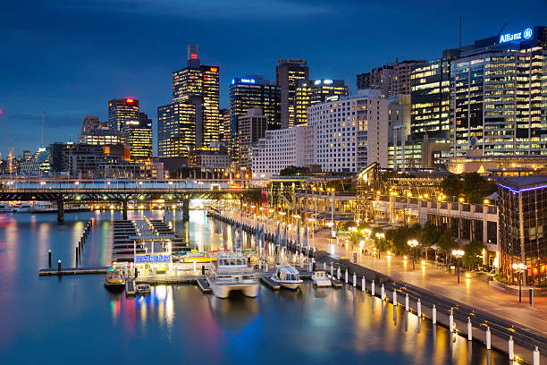
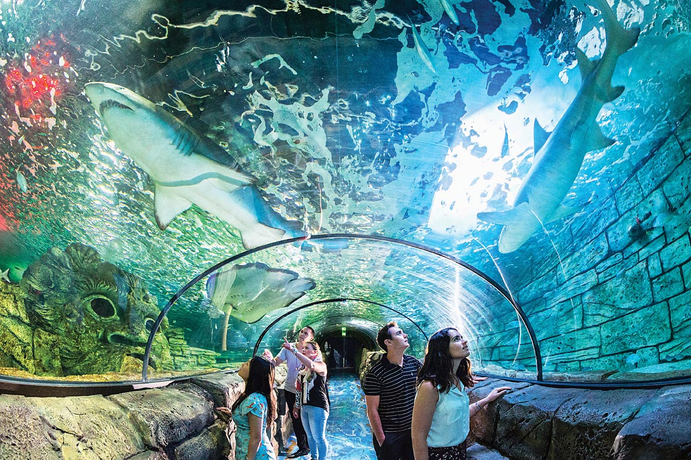
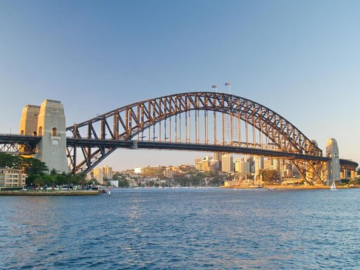
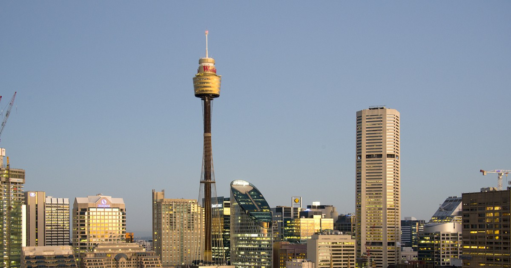

TOUROPIA
PLAN YOUR TRIP REGISTER/LOGIN FAQs CONTACT US
ExploreNewSouthWales
Situated in the southern part of the world, Australia is the perfect place for adventure seekers and people who love the sea. It is hands down, the best place to belt out your scuba diving skills as you enjoy the seafood by the shacks. For wildlife lovers, there are a handful of sanctuaries as well which are so vast in their size, it takes your breath away. Other than that, Australia as a country is very metropolitan in its nature and the vibe that it imparts. It is a melting pot of sorts for people from all around the world.

Sydney Opera House
The Sydney Opera House is an iconic structure of the city, located on Bennelong point. It is also recognised by UNESCO as a World Heritage Site. Revel in the beauty of this structure, by simply taking a walk around it, eating in its restaurants and hanging around its lobbies. A trip to Sydney is incomplete without a picture at the Opera.

Darling Harbour
Darling Harbour is a well known hangout spot in the city. It is a buzzing pedestrian area, full with loads of shops, exhibitions, museums, and whole lot of bars and restaurants. The attractions of this precinct include the Sea Life Sydney Aquarium, the Wild Life Zoo, Madam Tussaud's Wax Museum among a few others and even a water park for the children.

Sea Life Sydney Aquarium
This expansive Aquarium is located in the popular precinct of Darling Harbour and houses a huge collection of aquatic animals, with various different exhibits and over 700 species. A very popular attraction among families and kids, the aquarium has been open since 1988. The collection of marine animals in Sea Life is extremely vast, including two dugongs, of only the 5 displayed all over the world.

Sydney Harbour Bridge
The Sydney Harbour Bridge, before the Sydney Opera House came into existence, was the city's foremost landmark. At a length of 1,149 metres, it is the world’s sixth longest arch bridge. The arch bridge shape of this heritage-listed monument has earned it the nickname ‘Coathanger’. It is one of the most photographed landmarks of the city.
 Bondi Beach
Bondi Beach
Bondi Beach is perhaps Australia’s most popular beach, owing to its golden shoreline, laidback beach culture and crashing waves that make it a haven for surfers. The popular Bondi beach, situated in the suburb of the same name, is a surefire way of spending a great day out.

Sydney Tower
The Sydney Tower is the tallest structure in the city with height of 309 metres and forms a prominent part of Sydney's skyline. Featuring a shopping centre, restaurants and entertainment facilities, the prime attraction of the tower is the Sydney Tower Eye, an observation deck 250 metres above the ground, granting visitors an unforgettable view of Sydney’s cityscape.